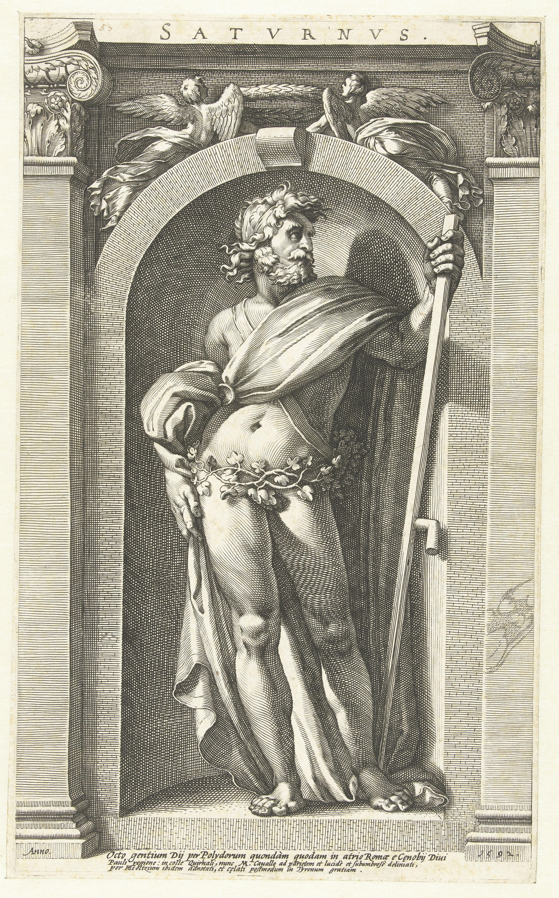

Polidoro da Caravaggio, Saturnus
Kronos is a god of time. When spring comes, he grows grains. When winter comes, he takes them.
Saturnus is a god of time, and at the same time a god of freedom and wealth. When spring comes, he grows grains. Even when winter comes, he does not take them.
Kronos does not have will, but only logic. Saturnus has the will to take care of the Latini.
How could Saturnus be thus?
How did Saturnus become free from logic?